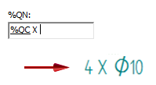
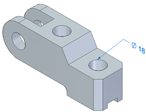
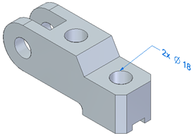
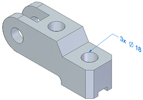

Smart Depth tab
The Smart Depth tab is available when adding and editing annotation properties for callouts, balloons, and hole tables. For information about using the Smart Depth tab for callouts and hole tables, see Define smart feature properties in the Dimension style and Define a smart hole table callout column.
- Hole Depth / Smart Hole Depth
-
- Through
-
Specifies a callout for a hole that enters one surface and exits the next surface. Solid Edge reads the data in this box when you use the Smart Depth option for a through hole on the Feature Callout tab in the Callout Properties dialog box or on the Callout tab in the Hole Table Properties dialog box.
- Finite depth
-
Specifies a callout for a hole that enters one surface but does not penetrate the next surface. Solid Edge reads the data in this box when you use the Smart Depth option for a through hole on the Feature Callout tab in the Callout Properties dialog box or on the Callout tab in the Hole Table Properties dialog box.
- Thread Depth / Smart Thread Depth
-
- Through
-
Specifies a callout for a thread depth that runs throughout a hole. Solid Edge reads the data in this box when you use the Smart Thread Depth option for a through thread on the Feature Callout tab in the Callout Properties dialog box or on the Callout tab in the Hole Table Properties dialog box.
- Finite depth
-
Specifies a callout for a finite thread depth. A finite thread depth enters one surface and goes a specified distance, but does not penetrate the next surface. A finite thread depth does not necessarily run through the same depth of the hole in which it is placed. Solid Edge reads the data in this box when you use the Smart Thread Depth option for a through thread on the Feature Callout tab in the Callout Properties dialog box or on the Callout tab in the Hole Table Properties dialog box.
- Slot Depth
-
Note:
Slot Depth is not used in hole tables.
- Through
-
Specifies a callout for a slot depth that enters one surface and exits the next surface. When you use the Smart Depth option on the Feature Callout tab for a through slot, Solid Edge reads the data in this box.
- Finite depth
-
Specifies a callout for a slot of finite depth. A slot of finite depth enters one surface and goes a specified distance, but does not penetrate the next surface. When you use the Smart Depth option on the Feature Callout tab for a through slot, Solid Edge reads the data in this box.
- Hole Quantity Note
-
Specifies the hole count information to be included whenever %QN is entered in a hole feature callout or dimension prefix. The content specified in the Hole Quantity Note box is displayed only when the hole count quantity is greater than one.
Note:Hole Quantity Note is not used in hole tables.
- Quantity (%QN)
-
You can enter the property text codes listed in the following table to specify which holes to count. There are three ways to count the hole features in the callout.
Example:The default Hole Quantity Note is %QC X, where %QC counts the coplanar holes and X is the plain-text multiplication symbol used to complete the prefix. The number of equivalent coplanar holes must be greater than one for the hole quantity to be displayed in the callout.

Enter this
To count this type of hole feature
Resulting hole callout
%QC
Quantity - Coplanar
Counts equivalent holes on the same plane and with axes that are parallel and pointed in the same direction. Use this option to count holes in a hole pattern.

%QP
Quantity - Parallel
Counts equivalent holes sharing the same orientation (the axes are parallel and pointed in the same direction).

%QA
Quantity - All
Counts equivalent holes in the part, based solely on hole parameters. Holes can be located on faces with different orientations.

Note:Equivalent holes are those with at least two identical parameters in the Hole Options dialog box, including hole type. Valid hole types are simple, counterbore, countersunk, and tapered. They can be threaded, as long as the thread is applied within the Hole command.
- Symbols and Values

-
Opens the Select Symbols and Values dialog box where you can generate the appropriate symbols and model-derived values without having to type the property text codes yourself. Examples of the types of symbols you can select include ± (plus minus), ° (degree), and ∅ (diameter). Examples of model-derived values include hole references, bend data, and weld beads.
- Format...
-
Modifies the format of the property text string output value at the cursor position in the Hole Depth, Slot Depth, and Thread Depth boxes.
Displays the Format Values dialog box where you can choose the formatting. You can apply formatting to each valid property text string. The type of formatting you can apply depends on your cursor position when you select the Format button.
For more information, see Format property text values.
- Special characters
-
Specifies mechanical font characters for the text boxes. The available special characters are diameter, square, counterbore, countersink, depth, initial length, arc length, plus/minus, degree, between, and statistical tolerance.
- Hole reference
-
Specifies hole and thread reference attributes for the text boxes. The available attributes are Hole Size, Hole Depth, Counterbore Size, Counterbore Depth, Countersink Size, Countersink Angle, Thread Size, and Thread Depth.
-
For balloons and callouts, the information on this Smart Depth tab is initially read from the text boxes on the Smart Depth tab in the Dimension Style dialog box. The values on this tab do not participate in saved settings.
-
For hole table callouts, the information on the Smart Depth tab is controlled by saved settings. It is read from, and saved to, the Saved Settings options on the General tab in the Hole Table Properties dialog box.
How do I
Create a hole tableChange hole table labels
Define a smart hole table callout column
Hide the hole table origin
Show hole size tolerance
Learn more
Hole tablesAdding hole table columns
Look up more details
Hole Table commandHole Table command bar
Hole Table Properties dialog box
Options tab (Hole Table Properties dialog box)
Hole Number tab (Hole Table Properties dialog box)
Callout tab
Units tab (Hole Table Properties dialog box)